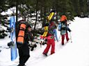
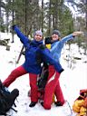
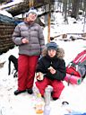
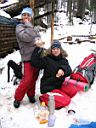
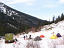
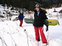
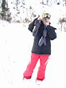
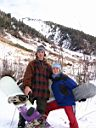

Здравствуй, Мамай!
28, 29 октября 2006
Вечер накануне прошел в поисках зимнего барахла, приведения
его в порядок и запихивания в рюкзак. Барахло будет зимовать на Мамае,
потому как таскать его тудым-сюдым будет жирно, а в худшем случае потери
под 2хметровым снегом - не жалко :) Доску брать пока не буду, сердцем
чую, снега маловато. Да и дела семейные на один день только отпускают
:)
Из Иркутска на распоследней электричке прикатили представители
Фан-Спорта - Юля (СНежная) и Лена (Ленка). Представитили проследовали
в отдельные аппартаменты в нашей квартире, потому как спонсорам мы завсегда
рады ;) впрочем как и старым добрым друзьям и подругам :)
Утро субботнее, ранний подьем, пробежка до электрички
и первая новость - отправление стало чуть позже, в 6:27. Сидим впятером
- компанию составили Макс и его товарищь Леха. С Максом я знаком по
Тальцинскому в июне. Кто спит, кто общается, вот так незаметно подкралось
Выдрино, а за ним и Мамай! Кажися приехали :) Вылезаем, привязываем
доски, и топаем, топаем, топаем по знакомой дороге !

А
по лесной дороге следы машин и экстремальных ботинок. Народ заезжал
вчера, и даже уже выходил обратно. На ягодной поляне - покинутый табор
сборщиков урожая. На дороге местами грязные лужи, чистые ручьи, а вокруг
все больше и больше снега! Вот уже близок конец пути и появилась вторая
новость - строителей на Мамае прибыло! Отличились конечно не москали
с долгообещаемой горнолыжкой, а простые улан-удэнские парни из Байкальского
Экстрима, который обустроили бурятскую поляну бревнами для сидения вокруг
костра и большим навесом.
Вот и зимуха! Макс и Леха пошли дальше, ставить палатку
возле кунга, и пообещав вечером зайти к СНежной и Ленке на кружку перцовки
:) Однако меня вечером не будет, поэтому вместо горячего обеда мы втроем
разлили горячительное и бахнули перцовочки за Мамай, за Погоду и за
Любовь. И чего-то сразу стало всем тепло и хорошо, а вот и картошечка
горячая готова, отобедали и чай попили. Погода солнечная, с крыши зимухи,
с жердей навеса, с еловых веток - весенняя капель.



В зимухе обнаружились записки Пахи Африканыча об открытии
с товарищами-иркутянами сезона 7го числа (ну это мы знаем, наслышаны),
а также записка Сергея Лавиновича о прохождении мимо и о строительстве
на соседней поляне бунгало 27-28го числа. Опаньки, разминулись и даже
не заметили при выгрузке из электрички загружающихся улан-удэнцев! Ну
да ладно, увидимся через неделю.
"Пора и покататься!", решили девушки и повернули
доски в сторону кунга. А в кунге кто-то живет и рядом 4 палатки стоят.
Поговорили с ребятами, которые не успели убежать на гору кататься, и
выяснили, что снега для катания достаточно только на Лесном пупыре.
А на учебке и ближлежащих склонах - тоска и камни. Так что уставшим
подругам дорога дальняя вперед, а мне - назад. Несколько фото на память,
пожелания хорошо отдохнуть и добраться до дома, и мы разошлись.




Хотел закопать вещи в снег, но такого глубокого снега
не оказалось. Побросал все в кусты и потопал по раскисшей тропе. По
дороге встретил Ковалева Диму, который вызволял видавший виды внедорожник,
застрявший в ловушке из ям и камней. Посмотрел на борьбу мужественного
человека с силами природы, слегка подмогнул и побежал на электричку,
уделывая любимые ботинки в грязи.
Вот и октябрь месяц, до массового катания осталась неделя,
надеемся на силы Мамайские и его успехи в снеготворчестве!
Ожидается продолжение истории "как мы провели выходные"
от СНежной и Ленки. Девченки - пишите !!!...
Попрощались с Алексеем, целоваться не стали, в привкушении
скорой встречи, и побрели на Мясной или Лесной, неважно. Удручающе выглядели
бесснежные склоны, покататься на учебке не было возможным, а альтернатива
идти до Мясного не особо радовала.
Дорога неблизкая-тернистая. Под ногами грязь, слякоть, снег мокрый тяжелый.
Над нами безжалостно палит солнце. Хочется пить. В лужах вода, вспоминаешь
сказку " не пей, сноубордистом станешь" А это мне как раз
и нужно… А может не нужно… А может и не сноубордистом!
Прошли траверс, тяжко, то ли от жары, то ли от выпитой жидкости?!
Подойдя к началу подъема, припали у ручья." Лена, говорю, не пей,
только горло полощи" В итоге сама не удержалась и напилась. Эх,
хорошо! Красота! Солнце! Птички, цветочки, мадам Козявкина! … Хорошего
по-маленьку. Надо идти наверх! Двинули!
Со скоростью бешеной черепахи поднимаемся наверх. Поднимаемся, постепенно
раздеваясь, устраиваем легкий стриптиз. Жаль, не было рядом того, кто
бы мог это оценить.
… Снова ручей! Пить! Просто пить нельзя, вернее нежелательно. Я быстро
придумала отмазку. Достала шоколадку! Райское наслаждение! Горы, снег,
солнце! Чем не Альпы!? Вот долгожданный Лесной, северный склон! Из последних
сил поднялись на площадку и завизжали от восторга!!! Изумительно! Описывать
нет смысла! Сходите и посмотрите сами!
Налюбовавшись видами, нафотав Ленку в разных ракурсах, начинаем подготовку
к спуску. Встегнулись и вниз! Вниз! Вниз!
Открытие свершилось! И снова подъем, снова спуск! И так, пока силы нас
не покинули.
Спускаясь очереной раз, потеряла Ленку.
- Ленка! Ленка, ты где?!
- Я здесь!
Смотрю вниз , а она по тропе шагает с доской в обратную сторону.
- Стой! Куда пошла!
- Я попить!
- А доску то зачем тащишь?!
- А вдруг ее кто то упрет!
… Да!!! Серьезный аргумент, учитывая, что в радиусе 500 метров акромя
нас никого нет?
Вечерело. Спускаясь последний раз, немного рамсанулись.
Трудно дается наука….
- Ленка, не сиди, замерзнешь!
- Ленка , вставай!
- Поворачивай, не падай, ( Пи-Пи)
- Пи -Пи ! Ленка, ты где?!
В конце концов моё хрупкое нежное девичье сердце не выдержало…
-Пи! Пи !Пи! Пи! Пи! Не можешь, отстегивай сноуборд, иди пешком!
…. Бедная Ленка…. Отстегнула борд и пошла…
Проехала немного! Совестно! Ну, думаю, сволочь же ты, это я про себя
любимую, темнеет, а ты оставила девушку одну! Я же говорила, что сердце
у меня хрупкое и нежное….. Тоже отстегиваюсь и иду понизу, параллельно
тропе. Стемнело. Встретились на ручье у начала подъема. И как в добрые
времена побрели домой в темноте. Проходя мимо кунга "пингвины"
зло пошутили: "Накатались девчонки, все на выход" Но мы не
обиделись, они же пингвины….
Любимая зимушка! Алешка все бросил и ушел. Все осталось открытым!
Поставили горелку! Подошли ребята, Макс и Алешка, нас проверить!
После падений, различных ушибов Ленка уставшая быстро уснула. Поболтали
немного и спать.
Как хорошо выспались!!
Утром никуда не пошли. Ленка подсуетила костер. Все мокрые с вечера
вещи вытащили сушиться. День чудесный! Солнышко ласковое! Тепло!
Позавтракали, если можно так сказать, Ленка ест как птичка, помаленьку,
с ней очень выгодно ходить…
Собрались и вниз! Тропа изменилась, от вчерашнего снега не осталось
и следа. Зашли в гости к бабе Ире. Так как в запасе было время, решили
сходить на Байкал. !!! Байкал!!! Прекрасно провели время!
На станции встретили парней. Незаметно доехали до Слюдянки, активно
обмениваясь впечатлениями. Особенно много их было у Лены! Про ее копчик
знал весь вагон! В Слюдянке нас ждал Алексей. К нему на чашку чая не
пошли, сил не было, утомились немного. Проводил он нас до иркутской
электрички и поехали мы домой… Нам с Ленкой еще топать по ночному Иркутску…Но
не впервой, прорвемся!!!
Октябрь 2006.
Белокрылов А.Ю. Слюдянка
Юля СНежная. Иркутск
Ленка. Ангарск.